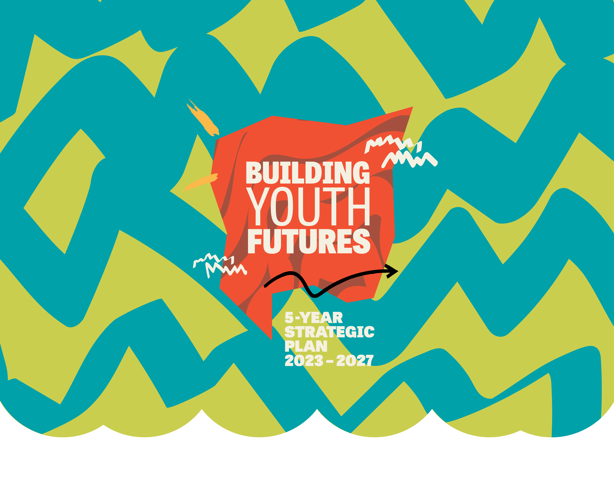
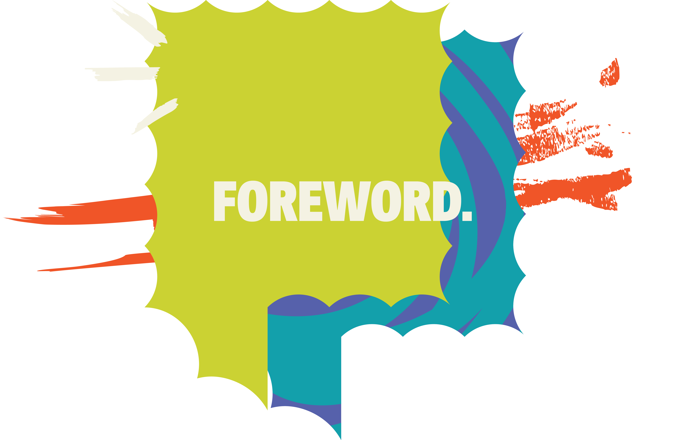
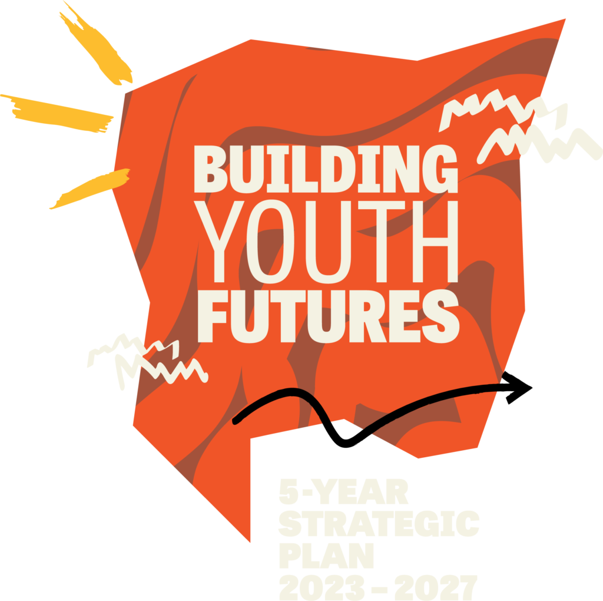
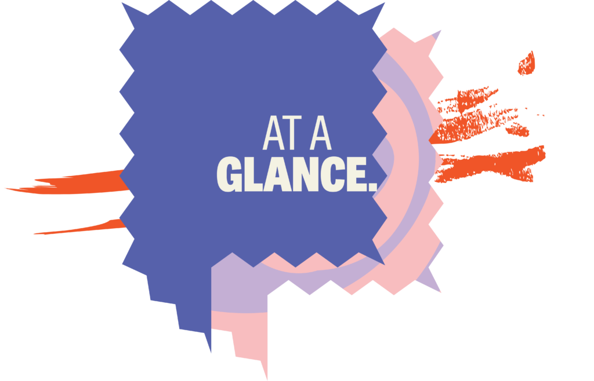
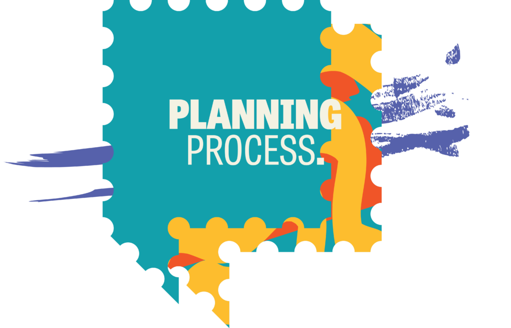
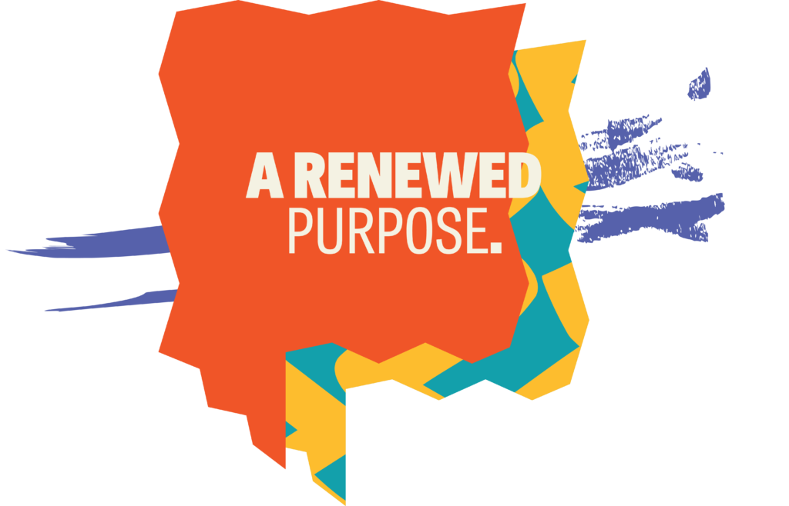
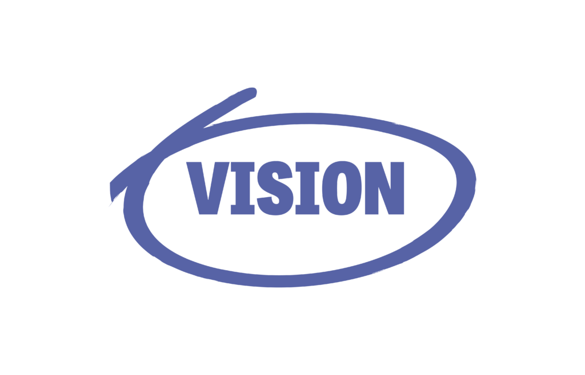
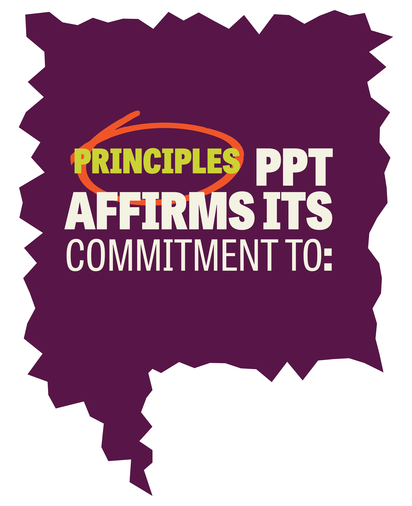
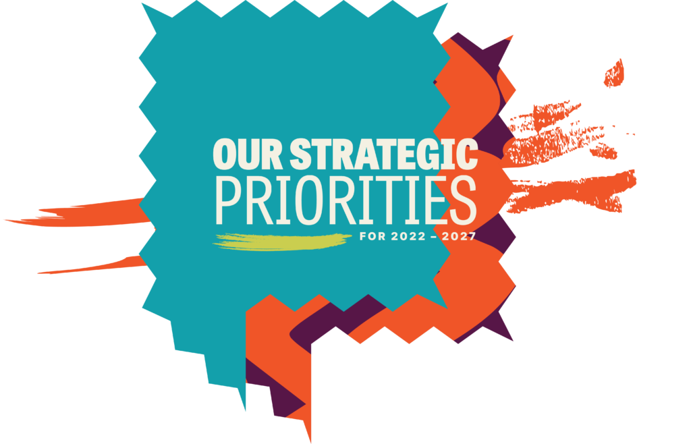
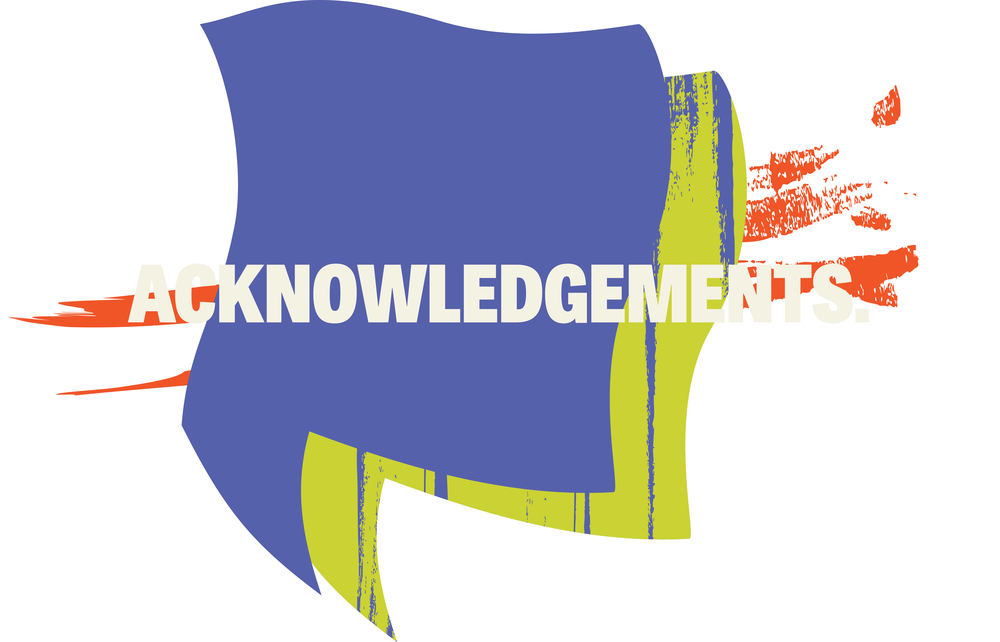

Planned Parenthood Toronto (PPT) has served communities for over six decades and has been at the forefront of youth sexual health since the early 80s.
The last few years have been especially challenging for youth who have been uniquely impacted by the COVID-19 pandemic. Their education has been disrupted. Many have lost their jobs. Their mental health has suffered and too many have experienced gender-based violence. Toronto-based studies report that rates of anxiety, depression, stress and loneliness among youth have more than doubled from pre-pandemic levels, with anticipated long-term consequences.
In the United States, simultaneously, we have seen the evisceration of the federally protected right to abortion and the emergence of laws banning gender-affirming care across several legislatures. This has not only sent shockwaves throughout Canada but highlighted the significant gaps and challenges to achieving reproductive justice within our own borders.
As part of the development of this Strategic Plan, we spoke to the youth who access health services, volunteer their time to support their peers and participate in community programs at PPT. Despite immense challenges, they remain hopeful that an equitable, resilient and sustainable recovery from the pandemic is possible. With ingenuity and determination, they are already forging solutions to ensure their communities emerge stronger than before.
At PPT, we see youth as equal partners – not passive service recipients – and we strive to meaningfully engage them in decisions and issues that impact their lives and communities. We meet youth where they are, build on existing skills and put them in the driver’s seat.
Importantly, our consultations revealed that stakeholders wanted to see PPT take responsibility for harm caused to Black and Indigenous communities by the early Planned Parenthood umbrella organization and actively commit to repair and reconciliation. By listening to Black and Indigenous communities, taking their lead and working to rebuild their trust through consistent action, we desire to transform the conditions and practices that reinforce their oppression and increase our ability to provide culturally safe care and programs.
This Strategic Plan represents our roadmap to building better youth futures and advancing health equity over the next five years.

We are thrilled to unveil the four strategic priorities that will guide our work from 2022 to 2027:
Mohini Datta-Ray
Executive Director
Chair, Board of Directors

Planned Parenthood Toronto (PPT) became a registered charitable organization and began providing direct sexual health services in 1969. In 1983, PPT opened the House Teen Health Centre for youth aged 13 to 25 and in 1990, PPT became a licensed Community Health Centre.
PPT operates virtually and physically at the clinic. Through our mobile health services, we also travel to meet youth where they are at convenient locations around the city. PPT’s programs and services are co-designed by youth, anchored in peer engagement and education and delivered creatively using digital tools and technology.
Does the following:
With youth aged 13 - 29:
Provide primary care, gender-affirming care, mental health services and sexual health services including abortion care
Deliver sexual health, healthy relationships, anti-homophobia/biphobia/transphobia, and peer education programs
Conduct community-based research
Provide comprehensive, accurate, youth-friendly sexual health information on
Within the system:
Collaborate with other youth-serving organizations and partners
Advocate for youth-focused legislation, policy and practices related to sexual and reproductive health care, overall health and well-being
Influence public opinion about sexual and reproductive justice

In March 2022, the PPT Strategic Planning Committee initiated a planning process to renew the foundational statements, determine our long-term direction and identify strategic priorities to guide the organization over the next 5 years.
An environmental scan and S.W.O.T (Strengths, Weaknesses, Opportunities and Threats) analysis process was conducted from April through May 2022. This process included:
Online Surveys;
Interviews and focus groups with individuals and key stakeholders inside and outside of PPT;
A review of internal documents and a selection of recent literature; and
External research conducted by the consultants.
Confirm refreshed foundational statements; and
Develop strategic priorities to guide the organization over the next 5 years.
The draft strategic plan was created in July and approved in August 2022. Over the summer, we developed an Implementation Plan to guide us in driving our mission and achieving our strategic priorities.

WE ARE DELIGHTED TO PRESENT
OUR REFRESHED FOUNDATIONAL STATEMENTS:


Young people are at the centre of all of PPT’s work. Youth voices and perspectives drive decisions about how programs, services and community-based research are designed, delivered, monitored and evaluated. Young people are supported to meaningfully engage in decision-making and demonstrate their leadership.
We honour, centre and celebrate all sexual orientations and gender identities. These include two-spirit, lesbian, gay, trans, queer, bisexual, intersex and asexual youth and we provide gender-affirming spaces, care and programming.
EQUITY
PPT developed an equity statement in 2021 that speaks to PPT’s values, commitment and vision regarding equity.

As PPT moves towards its goal,
we have developed the following
strategic priorities to guide us along our path.
Our Strategic Priorities for 2022 – 2027 are:
OBJECTIVES
Assess the impact of and explore the revival and expansion of mobile health care provision (i.e. health provider travels to meet youth where they are) to increase access to programs and services.
Develop and maintain reciprocal strategic outcome-based partnerships with youth-serving and culturally-specific organizations across Toronto. Continue to partner with institutions (schools, community health centres, Ontario Health teams, ethnocultural and social service organizations) across Toronto to offer programming and services through satellite locations.
Reconceptualize PPT as a vibrant, accessible community hub for racialized 2SLGBTQIA+ youth that provides a mix of health care, programs, services, activities, recreation, social, employment assistance and newcomer support. Work alongside youth to strengthen their capacity and build their futures. Explore opportunities for better communication, collaboration and integration between health services and community programming departments.
Build internal capacity on and expand access to culturally responsive, gender-affirming care for trans and non-binary clients and program participants.
OBJECTIVES
PPT will align the brand experience and communication strategy with the refreshed foundational statements, principles and strategic directions. We will make investments to make our communications tools and website more accessible. We will also make strategic investments in youth-driven codesign approaches to ensure that we are evolving and adapting to remain relevant, pertinent and where youth are.
PPT will invest in and develop integrated communication, advocacy and community-centric fundraising strategies that build brand awareness and galvanize support for reproductive justice, including abortion access and other issues that impact youth health and well-being. PPT will bring our voice, expertise, knowledge and political acumen to inform and influence decision-makers at policy-making tables and ensure that policies reflect the unique needs and lived experiences of youth – especially racialized and 2SLGBTQIA+.
Share the outcomes of PPT’s work and community-based research findings to position PPT as a leader in youth-driven design in health and well-being.
OBJECTIVES
OBJECTIVES
Develop a values-driven resource mobilization strategy that diversifies funding sources, decreases reliance on government funds and fosters the ability to expand programs and services.
Develop an evidence-based planning and evaluation framework and implement data collection tools and systems to demonstrate the contributions of PPT to the health and well-being of youth.
Invest in necessary operational systems, tools and expertise to provide seamless client experience and secure and easy access to data and information. Implement mechanisms to ensure greater accountability, staff involvement and commitment to continuous improvement.
Explore opportunities to reimagine or leverage PPT’s physical and virtual presence to better serve Toronto’s youth.

Thank You
We would like to thank all the stakeholders who generously gave their time and energy to help us envision the future of PPT. We especially wish to acknowledge the youth who participated in this process for their candidness, enthusiasm and insightful contributions – their ideas and opinions were invaluable to the process and their inputs are woven into every facet of the Plan.
The Strategic Planning Committee, under a mandate from PPT’s Board of Directors and with support from There Management Consulting Inc., led the planning process for the organization. Without their dedication and guidance, none of this would be possible.
Additionally, we want to express our utmost gratitude to our entire staff and leadership team and praise the thoughtful stewardship of our Executive Director in bringing this project to completion. This team has repeatedly demonstrated their tireless commitment to the work and their ability to pivot, adapt and innovate. We are truly fortunate to have you!
Lastly, we want to acknowledge and thank our community of supporters, donors, funders, volunteers and partners. Without your generous and consistent support, this work would be impossible.